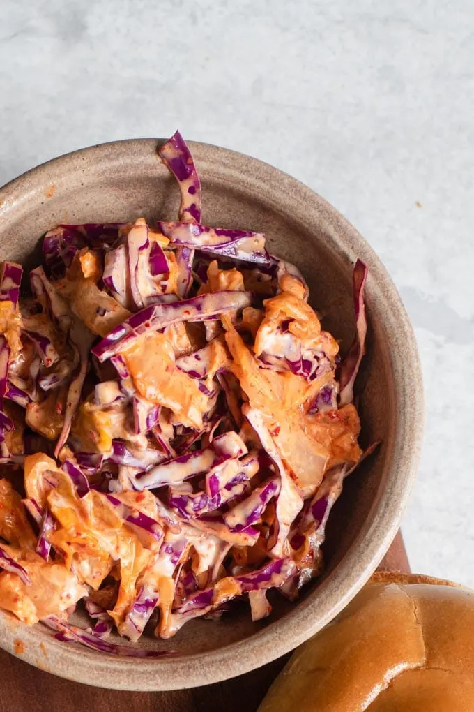

Kimchi Coleslaw

Kimchi slaw is an easy to make slaw with a Korean twist! With crisp and juicy kimchi, it's just bursting with flavor. It's the perfect cooling condiment to accompany any Korean inspired meal or give any meal a bit of a Korean flair!
Ingredients
- 1 cup thinly sliced cabbage (green or red)
- 1 cup chopped kimchi
- 1/4 cup vegan mayonnaise
- 1 tsp rice wine vinegar
Steps
- Mix all ingredients together in a large bowl. Taste and adjust seasoning if needed. Store in sealed container in fridge until ready to eat.
Home